polycarpic — personal budgeting & wealth management (virtual Single Family Office)
What this product should feel like to use, and the principles that resolve design disputes.
#2CFF05, "the project name relates to fruiting plants") measures 1.36:1 against white, far below AA — kept as the literal --brand value everywhere it clears AA (dark surfaces), with a darkened same-hue green for light-mode --primary, stated plainly rather than silently swapped for a different hue — see Foundations.The single source of truth for the visual language. The written spec lives alongside this doc; the machine-readable system lives in the two CSS files that frontend-lead consumes directly.
docs/DESIGN/ is the in-repo, code-level home that ships with the project and is the contract for implementation.
Color, typography, spacing, radius, and shadow primitives — SvelteKit + shadcn-svelte (PRD §8). Edit values in tokens.css; the swatches below preview the live variables. Full rationale in design-system-spec.md.
Token referenceEvery token with light & dark hex values, swatches, and “used for” →See design-system-spec.md § Financial semantics — gain/loss, safe-harbor status tiers, and the "never color alone" rule.
Seven fixed-order hues, the literal --brand and --brand-2 plus five at their brightness and intensity, and a neutral Other, for treemaps, Pack, Sankey and bars. Colour follows the entity, never its rank. The light-mode 3:1 surface rule is waived for these fills, compensated by a label, a hairline or gap, and dark label ink. Values, label inks and fixed assignments: tokens.html § 7; method and validator results: design-system-spec.md § Categorical palette.
Dark-on-light in light mode, light-on-dark in dark mode — see design-system-spec.md § Sidebar for the collapse-to-rail behavior and three proposed expand/collapse cues.
Radius: measured --radius-sm|md|lg|xl = 6/8/12/20px (cards 12px, buttons 8px — both products' actual app-level values, not either's marketing-only pill).
The component inventory and the styles that realize it, built on the tokens. Styles live in screen.css; full states-per-component table lives in design-system-spec.md § Component inventory.
| Component | shadcn-svelte primitive | polycarpic usage |
|---|---|---|
| Net-worth hero | Chart (LayerChart, Area) | Big figure + signed delta on the figure + single-line area chart — Monarch-inspired |
| Grouped account list | Table / custom | Type-grouped rows with sparkline + freshness — Monarch-inspired |
| Segmented bar + legend | Custom, tokens-driven | Assets/Liabilities, allocation actual-vs-target — Monarch-inspired |
| Badge | Badge | Entity/account/transaction status, link-health — see Financial semantics |
| Transaction table | Table | Account register, exceptions report, lots |
| Accordion | Accordion | Pending row expansion |
| Tabs | Tabs | Transactions' stages with count badges; General Ledger's sections; Reports' statements; Tax's jurisdictions |
| Near-full-screen modal | Dialog | Journal-entry modal (header + legs) — manual entry, Correct entry, Split, Group & Summarize |
| Entity switcher | Tabs / Sidebar | Switch between Person/Trust/Business/Household |
| Transaction detail | Sheet | Drill into a posted/draft entry, its journal lines, source doc |
| Empty state | Card + plain text, no skeleton | Dashboard panels not yet shipped (tax at 1.0, allocation at M4) — see styled-screens/dashboard.html |
| Top row | —, starts right of the sidebar | Not sticky, same background as content: breadcrumb left (expand/collapse lives in the sidebar brand row); entity selector + separator + "more" menu right — AI/search/notifications/gear dropped — see design-system-spec.md § Header |
| Sidebar | Sidebar (shadcn-svelte sidebar-07 block) | Floating card, gutter + rounded all 4 corners, eight nav items, brand top item carrying the expand/collapse control (panel-left-close right-aligned; collapsed, the mark swaps to panel-left-open on hover/focus), avatar-popover bottom item opening right — see design-system-spec.md § Sidebar |
| "More" menu | DropdownMenu | Top row, right-justified — per-page global actions (Sync, New entry, Export, ...) |
| Avatar cluster | —, custom | Overlapping initials in the entity selector, max 3 + overflow |
| Avatar popover | Popover / DropdownMenu | User menu at the sidebar's bottom, opens to the right — profile, Settings (proposed), Notifications (proposed), preferences, theme, keyboard shortcuts, Log out last |
| Landing illustration | —, custom | Home — the mountains illustration under the brand app bar, then headline, subhead and feature cards; not a signed-in screen |
| Switch | Switch | Settings on/off preferences (auto-post matched recurring transactions, reduced motion) |
| Chart-of-accounts tree | —, custom (nested disclosure rows) | General Ledger: group rows with chevrons, account rows link to the register, custodial cross-reference badge |
| Date range control | Popover + Range Calendar | General Ledger's Journal entries card: presets plus one month grid |
| Brand app bar | —, custom | Every page without the app shell (Home, Get started, Admin): fixed near-black bar, neon lockup left, the page's trailing items right, a fade below (deep over Home's image, a short shadow over plain pages) |
| Split screen login | —, custom | Login — full field list, centered form column, always-branded visual pane |
How users move through the product to accomplish the highest-traffic stories (PRD §4). Each flow is embedded inline below, because a browser serves flows/*.md as raw Markdown and its fenced mermaid blocks would never reach the page's Mermaid loader. The .md files stay as the diffable source of truth in flows/.
Story (PRD §4.1): a visitor's first move from Home, on a product with no public sign-up. Source: flows/home-entry-flow.md.
flowchart TD
home([Visitor on Home]) -- Sign in --> login[Login]
home -- Get started --> gs{Get started:\ninvited to\nthis instance?}
invite([Invite link from\nan entity owner]) --> signup
login -- "Have an invite?\nCreate your account" --> signup[Sign up:\ninvite code, then account\nGoogle or email + password]
login -- "No invite?\nSet up your own instance" --> gs
login -- enter login credentials --> landed([Dashboard])
gs -- "yes: I have an invite" --> signup
gs -- "no: my own instance" --> walk[Walkthrough, same page:\nrequirements, deploy,\noperator sign-in, invite]
signup -- valid invite --> invited([Dashboard of the\ninvited entity])
Story (PRD §4.2): per-entity financial health at a glance. Source: flows/dashboard-glance-flow.md.
flowchart TD
start([User logs in]) --> default[Land on default entity:\nlast-viewed, else the user's\nown Person entity]
default --> render[Render dashboard:\nbalances, cash flow, recent activity,\npending tax liability, allocation snapshot]
render --> loading{Data cached?}
loading -- no --> skeleton[Skeleton matches real layout\nno spinner]
skeleton --> render
render --> switch{Switch entity?}
switch -- yes --> picker[Entity switcher\nPerson / Trust / Business / Household]
picker --> filtered[Re-render scoped to\nuser's membership on that entity]
filtered --> render
switch -- no --> drill{Drill into a number?}
drill -- yes --> source[Navigate to source:\nledger line, lot, or liability detail]
drill -- no --> idle([Glance complete])
Story (PRD §4.3): staged for review → matched / split / grouped → posted → correctable. The review mechanics follow a Plaid bank-feed workflow: every imported transaction is reviewed, matched, split or grouped, then posted. Source: flows/import-confirm-flow.md.
flowchart TD
nav([Open Transactions\nfrom the sidebar]) --> filter[Account filter:\nAll Transactions by default,\nor one custodial account]
filter -. scopes .-> tabs[Tabs with count badges:\nExceptions, Pending, Posted;\nopens on Pending]
tabs --> stage
tabs --> exceptions
tabs --> posted
poll([Plaid adapter polls\nor fake source generates batch]) --> stage[Raw transaction lands\nin the Pending tab]
stage --> transfer{Two legs match\nwithin date window?}
transfer -- same posting date --> autoEntry[Locked debit leg +\nsuggested offset leg\ntwo-line preview]
transfer -- different dates --> citEntry[Two entries via\nCash in Transit clearing account]
transfer -- unmatched --> openItem[Remains a single-leg\nPending row]
openItem -- counterpart arrives --> transfer
openItem -- user approves into CIT --> citOne[One-sided in-flight item:\ncash leg vs. Cash in Transit,\ncounterpart still to come]
citOne --> post
openItem --> aging{Older than\nexceptions threshold\ndefault 3 business days?}
aging -- yes --> exceptions[Surface on\nExceptions tab]
aging -- no --> openItem
citEntry --> autoEntry
autoEntry --> expand[User expands the row:\nAuto-Suggest Match view]
expand --> action{User action}
action -- edit offset --> editLeg[Inline search dropdown:\noverride the suggested account]
editLeg --> action
action -- split --> splitGrid[Split grid:\nadd offsetting rows]
splitGrid --> liveCheck{Split sum equals\nthe Plaid total?}
liveCheck -- no --> splitGrid
liveCheck -- yes --> post
action -- group --> bulkSelect[Checkbox-select rows,\nbulk action bar appears]
bulkSelect --> groupModal[Group and Summarize modal:\npre-filled entry, one aggregate\nline + balancing distributions]
groupModal --> post
action -- approve --> post[User hits Approve and Post]
post --> gate{Posting gate:\nbalanced, accounting equation,\ndate match, one entry per draft}
gate -- fail --> stage
gate -- pass --> commit[Row fades out of Pending;\nbalanced entry commits to the GL]
commit --> toast[Toast: entry posted]
commit --> posted([Appears on Posted,\npaged])
exceptions --> resolve{Resolved manually?}
resolve -- yes --> post
resolve -- no --> exceptions
posted --> correctQ{User clicks\nCorrect entry?}
correctQ -- yes --> doCorrect[System posts the reversal\n+ the new corrected entry\nuser never sees reverse as the verb]
doCorrect --> correctedBadge[Row now shows\nCorrected badge]
correctedBadge --> clickThrough[Click-through: original lines\nshaded/struck + reversal + new entry]
correctQ -- no --> complete([Flow complete])
clickThrough --> complete
Tabs row under the account filter, one visible at a time, in urgency order. Each tab carries its count, so every stage's load stays visible while another is open: secondary, destructive-soft on Exceptions when non-zero. Transactions opens on Pending, the review inbox; a non-zero Exceptions count does not take the default, its badge is red instead. The counts follow the account filter, changing the filter keeps the current tab, and the URL hash carries the tab.landmark icon + <account> · <institution> via <provider> (e.g. "Primary Checking · Bank Y via Plaid"). With the filter on one account, the line is omitted — the trigger already names it.Draft (staged) (--secondary, clock), Posted (--outline, check), Corrected (--outline + --brand-2-tinted dot, pencil). An auto-posted row carries Posted plus a posted by rule — <name> line and the same Correct entry action.Story (PRD §4.5): pending liability, required payment, gap, post your payment. Tax is a sidebar item. Source: flows/tax-liability-flow.md.
flowchart TD
nav([Sidebar: Tax]) --> view[Tax view for the entity:\njurisdiction tab selected]
card([Dashboard: Pending tax\nliability card]) --> view
view --> accrual[Running accrual annualizes\nincome to date by tax treatment]
accrual --> pending[Pending liability =\nannualized tax to date minus\ncustodial prepaid balance]
accrual --> safeharbor[Two safe-harbor bases computed:\nprior-year and current-year]
safeharbor --> required[Required payment to date =\nlesser of the two safe-harbor bases]
required --> gap[Gap = required payments to date\nminus custodial balance,\nare you current with the authority]
pending --> display[Display gauge + figures]
gap --> tier{Gap status}
tier -- "gap < 0" --> onTrack[Tier: Normal / on track\nprepaid ahead of safe harbor\npositive token]
tier -- "gap ≥ 0, due more than 14 days out" --> caution[Tier: Caution\nwarning token]
tier -- "gap ≥ 0, due within 14 days or passed" --> danger[Tier: Danger\ndestructive token]
onTrack --> display
caution --> display
danger --> display
display --> extPay[User pays the tax authority\nat their own bank, the app\nnever initiates a payment]
extPay --> imported[Payment appears as an imported\nbank transaction, no counterparty]
imported --> postEntry[User posts the GL entry:\ndebit the tax-authority custodial\naccount, pending liability itself\ndoes not change, not filed yet]
postEntry --> accrual
display --> waitNode([Wait for next period cutoff])
waitNode --> freeze[Period cutoff freezes\nannualized figure for due date]
freeze --> accrual
gap < 0 (prepaid ahead of the safe-harbor requirement); caution when gap ≥ 0 and the due date is more than 14 days out; danger when gap ≥ 0 and the due date is within 14 days or has passed. They reuse the product-wide status vocabulary — design-system-spec.md § Status tiers.required − pending.Stories (PRD §4.6–4.7): three figures per account, lots, and GL vs. custodial reconciliation. General Ledger and Custodial Accounts are two nav items, not a toggle. Source: flows/securities-lots-flow.md.
flowchart TD
view([Open Custodial Accounts\nfor entity]) --> totals[Totals card:\nmarket value, book value, cash,\nUnrealized, summed]
view --> accounts[Per-account cards:\nlink-health badge]
accounts --> figs[Three figures, left to right:\nmarket value at EOD prices,\nbook value = GL cost basis, cash balance,\nand Unrealized]
priceFeed[Daily EOD price feed] --> figs
figs --> totals
accounts --> lotsCard[Lots sub-card per security:\npull-down shows lots,\nshort/long/total gain per lot + summed]
priceFeed --> lotsCard
accounts --> reconcile[Reconcile GL balance\nagainst custodian-reported balance]
reconcile --> match{Balances match\nwithin tolerance?}
match -- yes --> clean[Reconciliation: clean\npositive tier]
match -- "no: difference = staged drafts" --> unposted[Known unposted delta:\nthe unapproved drafts listed,\nnot a break]
unposted --> glLink
match -- "no: unexplained" --> brk[Reconciliation: break\ndanger tier, flagged\nalso on the Dashboard]
clean --> glLink[General Ledger account register\nshows the same balance, GL side]
brk --> glLink
glLink --> done([View complete])
$0.00 delta, so cards scan as columns. A totals card sums the four figures across accounts, with the price date. Cash sits last so the row reads as "market and book include cash" — the two totals first, the cash already inside them after.Tabs switch. Both read the same lot and journal data; the split is presentation, not a data fork.--destructive) and surfaces on the Dashboard glance too, not only here.Story (PRD §4.8): actual vs. target by asset class and sub-category, drift, two-level target editor. Source: flows/allocation-flow.md.
flowchart TD
open([Open Allocation\nfor entity]) --> actual[Actual by asset class:\nmarket value from lots,\nacross every custodial account]
actual --> target[Overlay the target\nper class]
target --> drift[Drift per class:\nactual minus target, in points]
drift --> act{User action}
act -- expand a class --> subs[Sub-category rows:\nactual vs. target and drift\nper sub-category]
subs -- drill a sub-category --> lots
act -- drill a class --> lots([Custodial Accounts lots,\nfiltered to that class])
act -- adjust target --> edit[Target editor, two levels:\npercent per class, then\nper sub-category behind a pull-down]
edit --> sum{Classes total 100%\nand each class equals\nthe sum of its sub-targets?}
sum -- no --> edit
sum -- yes --> save[Save target]
save --> drift
act -- none --> done([View complete])
outline badge ("+2 pt over", "−2 pt under"); on target shows the positive soft badge. No caution or danger hue.Story (PRD §4.9): parents roll up whole base entities; owner / manager / viewer per entity; the drill-through boundary. Source: flows/entity-membership-flow.md.
flowchart TD
login([User logs in]) --> memberships[Load memberships:\nbase and parent entities,\nrole on each]
memberships --> land[Land on last-viewed entity,\nelse the user's own Person entity]
land --> switcher[Entity switcher, always present:\nevery entity with membership,\nparents with their included\nbase entities nested]
switcher --> select[User selects an entity]
select --> roleCheck{Role on\nselected entity}
roleCheck -- owner --> ownerView[Full read/write:\npost, edit memberships, purge]
roleCheck -- manager --> managerView[Read/write ledger,\nno membership/purge rights]
roleCheck -- viewer --> viewerView[Read-only:\nbalances, activity, statements]
ownerView --> guard{Parent-entity\nstructure implies access?}
managerView --> guard
viewerView --> guard
guard -- "no (always)" --> explicit[Only explicit membership\ngrants access, never inherited]
explicit --> kind{Selected entity\nis a parent?}
kind -- no --> baseView([Render the base entity's\nown ledger and accounts])
kind -- yes --> consolidated[Render consolidated figures\nacross the whole included\nbase entities]
consolidated --> drill[User clicks a figure\nfrom an included entity]
drill --> boundary{Membership on\nthat base entity?}
boundary -- yes --> into([Drill into that entity's\nregister or lots])
boundary -- no --> stop([Boundary panel:\nIncluded from the named entity,\nno access to its ledger])
Owner / Manager / Viewer) use decreasing visual weight — default / secondary / outline (design-system-spec.md § Entity, account, and category badges).Story (PRD §4.7): three tabs; chart-of-accounts tree → account register → journal entry, with a custodial cross-reference. Source: flows/general-ledger-flow.md.
flowchart TD
open([Open General Ledger\nfor entity]) --> tabs{Tab}
tabs -- default --> tree[Chart of accounts tab:\ncategory → account → sub-account,\nGL balances]
tabs --> map[Balance sheet map tab, prototype:\nAssets vs. Liabilities + Equity]
tabs --> journal[Journal entries tab:\nby date, page size,\ndate range, sort]
tree --> act{User action}
act -- expand or collapse --> tree
act -- open an account --> register[Account register:\nevery line that hit it,\ndate order, running balance]
map -- click a tile --> register
act -- custodial badge --> custodial([Custodial Accounts:\nthe mirrored physical account])
register -- line chevron --> entry([Journal entry, expanded in place:\nevery leg, actor,\nCorrect entry action])
register -- breadcrumb --> tree
journal -- chevron --> entry
register -- Journal ID link --> journal
posted([Transactions: Posted tab]) -- Journal ID link --> journal
search([Search by Journal ID]) -.-> journal
Tabs row at the top of the content. Each keeps its card header. The URL hash carries the tab, so Back from a register returns to the tab it left; a Journal ID link selects Journal entries; the register's breadcrumb returns to the tree.landmark icon + institution) is a cross-reference to Custodial Accounts, never a second data source; accounts with no physical counterpart (Owner's Equity, Cash in Transit) carry none.JE-000214, assigned at posting and distinct from the UUID key: gapless, serialized per entity, never reused. It leads the Journal entries card, the Posted tab and the register, copied on hover, so any entry can be cited exactly.general-ledger.html#je-000212), which selects the tab, highlights the row and opens its legs, widening the date range if needed. An exact ID in search resolves to the same row within the active entity; no search surface is drawn yet (design-system-spec.md § Header).Stories (PRD §4.6–4.7): pick a statement, scope it, drill, export. An empty state until POLY-M5 builds the statements. Source: flows/reports-flow.md.
flowchart TD
open([Open Reports]) --> built{Statements built?}
built -- "no, before POLY-M5" --> empty([Empty state:\nreal card chrome,\nNot set up yet])
built -- yes --> pick[Pick a statement tab:\nBalance Sheet with custodial NAV\nand NAV delta beside it,\nIncome Statement, Cash Flow]
pick --> scope[Choose as-of date or period,\nand entity]
scope --> render[Render the statement\nfrom the GL]
render --> act{User action}
act -- drill a line --> register([Account register\nfor that line])
act -- export --> file([Download the statement])
act -- none --> done([Done])
reports.html shows dimmed Income Statement and Cash Flow previews for review only; they do not ship.Story: the shell itself: eight flat items, icon-rail collapse, entity selector, avatar popover, keyboard. Source: flows/sidebar-flow.md.
flowchart TD
load([Any app screen loads]) --> state{Remembered\nsidebar state}
state -- expanded --> full[Expanded, ~240px:\nmark + wordmark, collapse button,\n8 labelled items, avatar + name]
state -- collapsed --> rail[Icon rail, ~64px:\nmark, 8 icons, avatar]
full -- collapse button --> rail
rail -- click the mark --> full
full --> nav[Pick a nav item:\nDashboard, Transactions, General Ledger,\nCustodial Accounts, Allocation,\nTax, Reports, Entities]
rail --> nav
nav --> screen([Screen renders,\nitem marked current])
full --> avatar[Avatar trigger]
rail --> avatar
avatar --> pop[Popover to the right:\nProfile, Settings, Notifications,\nPreferences, Theme, Shortcuts, Log out]
pop -- Settings --> settings([Settings:\nno nav item active])
header([Header entity selector:\nname + avatar cluster]) --> switcher[Entity switcher:\nentities by membership]
switcher --> rescope([Current screen re-renders\nfor the chosen entity])
panel-left-close button right of the wordmark; collapsed shows the mark alone, which is itself the expand button and swaps to panel-left-open on hover or keyboard focus.Sidebar's stored open state)..proposed-tag); Log out is last, --destructive-styled.--sidebar-ring focus outline.Every page, rendered with the real design system: tokens.css + screen.css, the sidebar-07 shell, and Lucide icons. These are the visual-regression reference and the head start for frontend-lead. There is one fidelity tier: every page is a styled screen. Each screen supports light and dark (.dark on <html>) and is checked at 960px and 1280px. Click a screen to open it; the sidebar nav links between them.
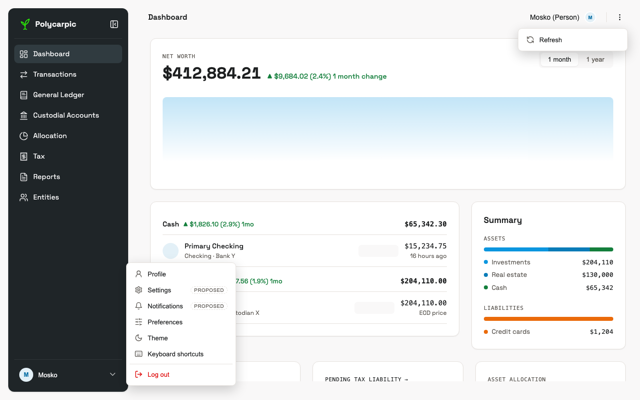
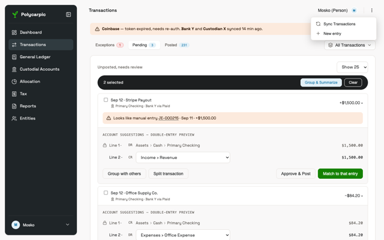
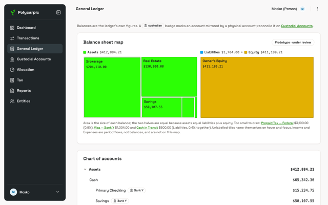
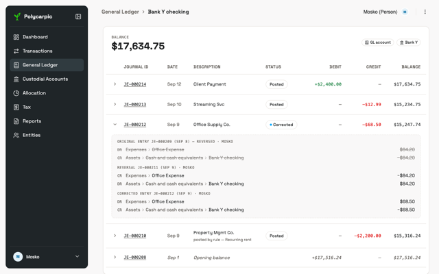
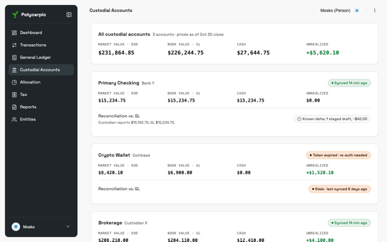
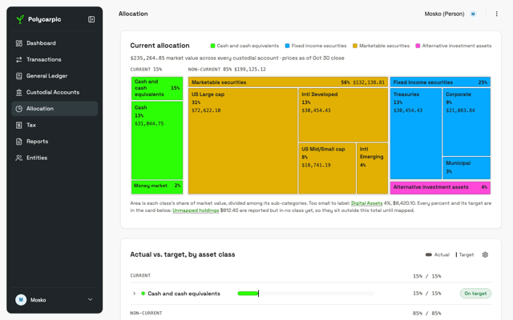
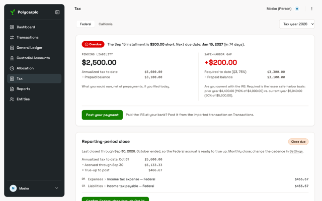
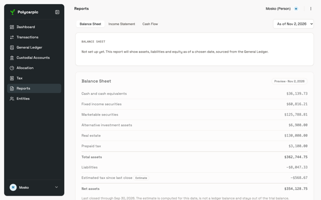
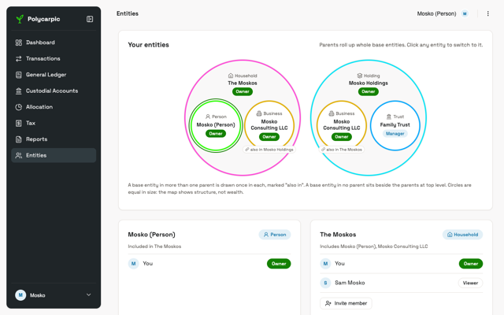
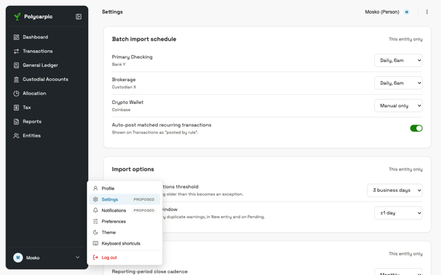
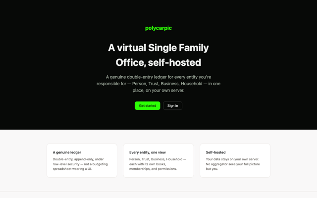
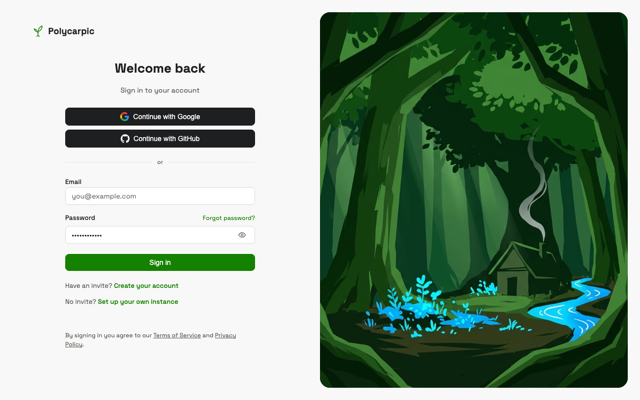
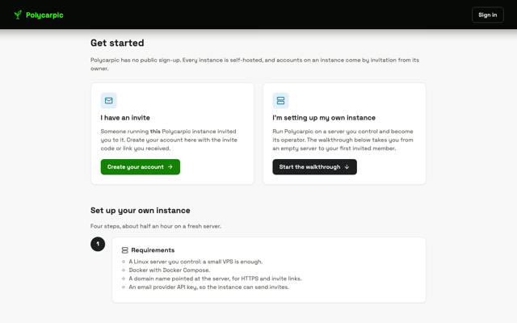
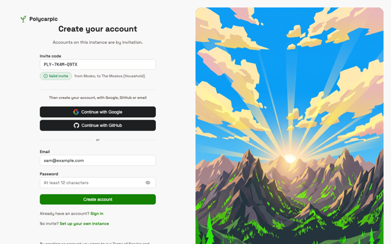
Not reachable from any in-app nav and not part of the eight-item IA. Operator-only, reached by SSH tunnel to the host.
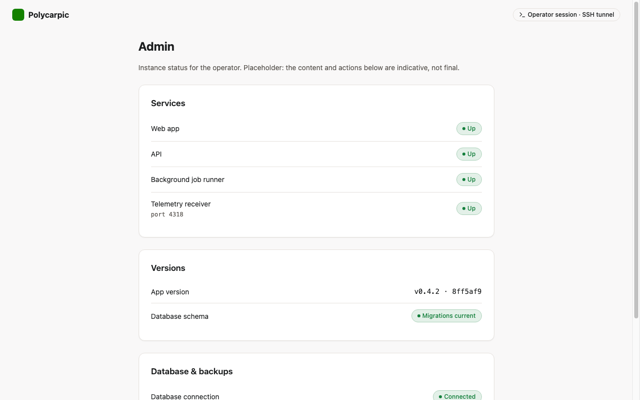
Accessibility is a design responsibility, not a QA afterthought. Full table in design-system-spec.md § Accessibility.
| Concern | Standard / approach |
|---|---|
| Color contrast | WCAG AA (4.5:1 text, 3:1 large/UI) — every token pair measured, both modes; --brand deliberately fails against light surfaces (1.36:1, by design — never used there, see Foundations); no CVD simulation run yet (open item, high priority given how central the brand hues are) |
| Color-alone signaling | Never — every gain/loss/status pairs color with a sign/icon/label |
| Keyboard | All interactive elements reachable & operable (shadcn default) |
| Screen readers | Semantic markup; labelled controls; delta sign readable from text content |
| Motion | Respect prefers-reduced-motion (policy not yet written) |
Unresolved design decisions and assumptions that could be wrong. Batched to team-lead for relay to the Principal — not blocking.
prototype/ throwaway UX prototype (kickoff §2.9) not yet built — confirm ownership/timing with team-lead.docs/DESIGN/comments.md with ## §<section-id> blocks, or run /serve-docs DESIGN and use the inline + Comment widget. Then run /refine-doc DESIGN. See process/WORKFLOW.md → Doc review loop.docs/DESIGN/ and not in the app's source?frontend-lead imports or derives the app's real stylesheets from tokens.css/screen.css.variants.css go?cairn tracker tool's own theme switcher, never part of the product — removed from this directory (POLY-78 relocates its generator target the same way). See design-system-spec.md § Provenance & shared tooling.